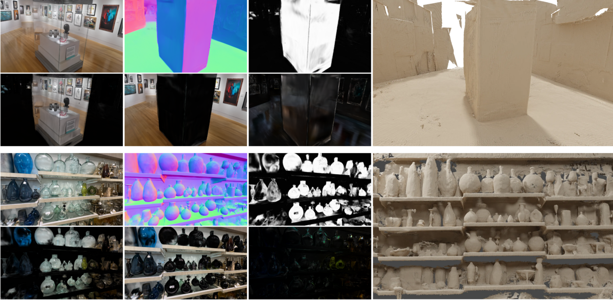
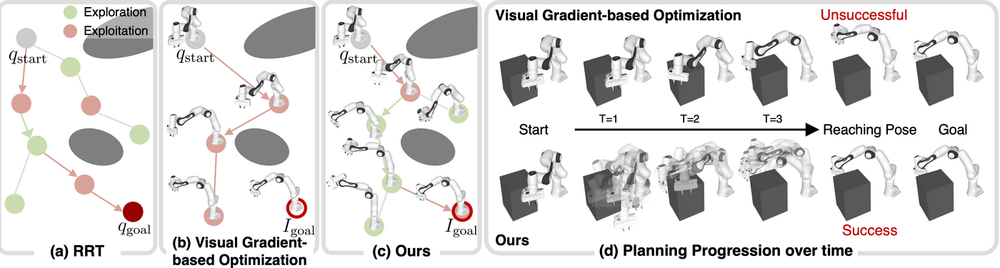
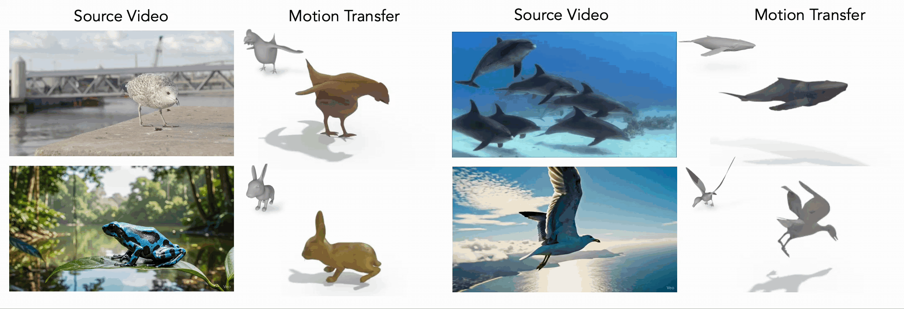
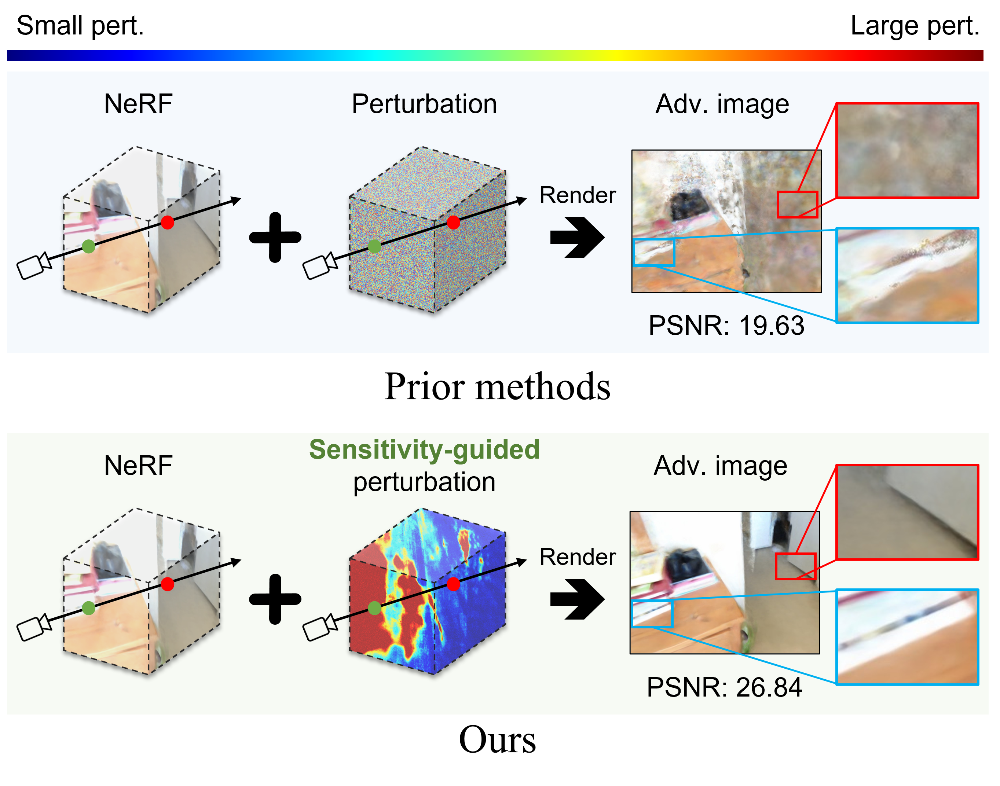
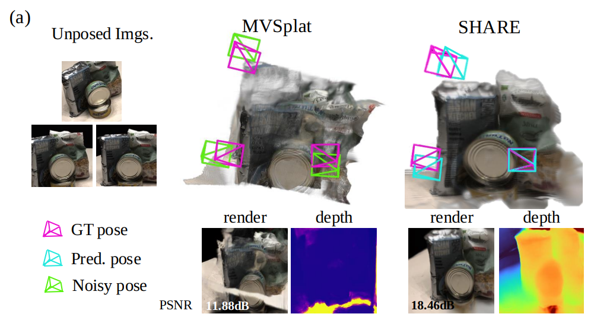
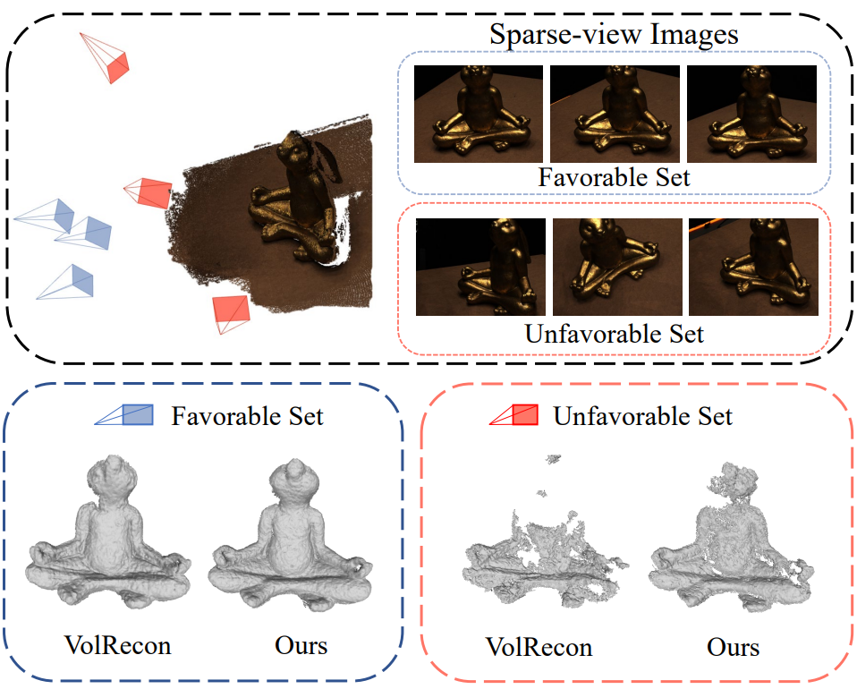
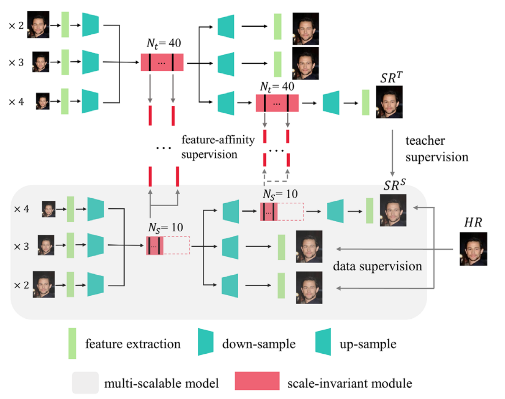
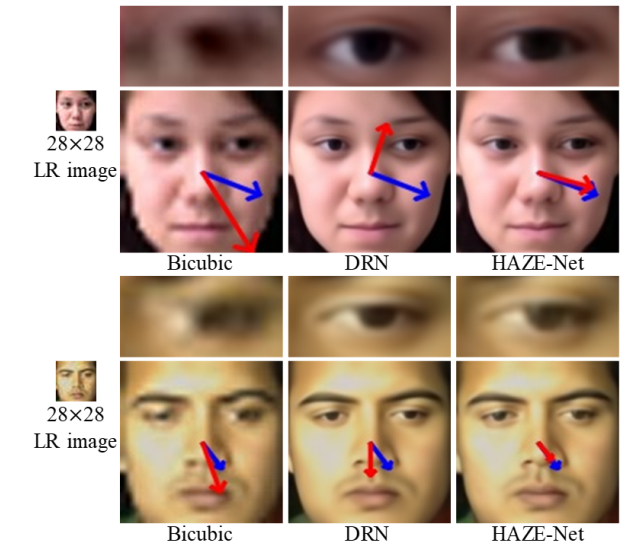
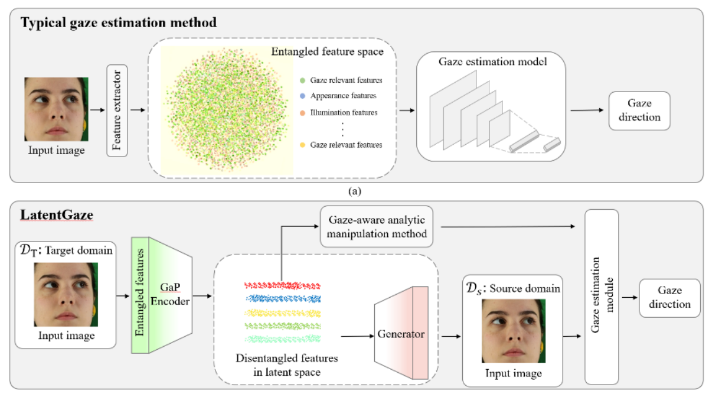

3D Vision, Robotics, and AI Research
I am a second-year Ph.D. student in Scalable Graphics, Vision, and Robotics (SGVR) Lab at KAIST, advised by Sung-Eui Yoon. Last Summer, I was fortunate to visit NAVER LABS Spatial AI team as a research intern. The goal of my research is to empower AI with spatial understanding by reconstructing, generating, and interacting within 3D scenes. Recently, I’ve been focusing on world models, robot vision, motion modeling, and rendering.
Selected publications. Full publication list, including domestic publications, is available in my CV.







Shared knowledge distillation for robust multi-scale super-resolution networks
Electronics Letters 2022


Ph.D in Computer Science, KAIST
Master's in Computer Science, KAIST
B.S. in Industrial Engineering & IoT Artificial Intelligence, Chonnam National University
Top Rank (GPA: 4.36 / 4.5, Major GPA: 4.46 / 4.5)